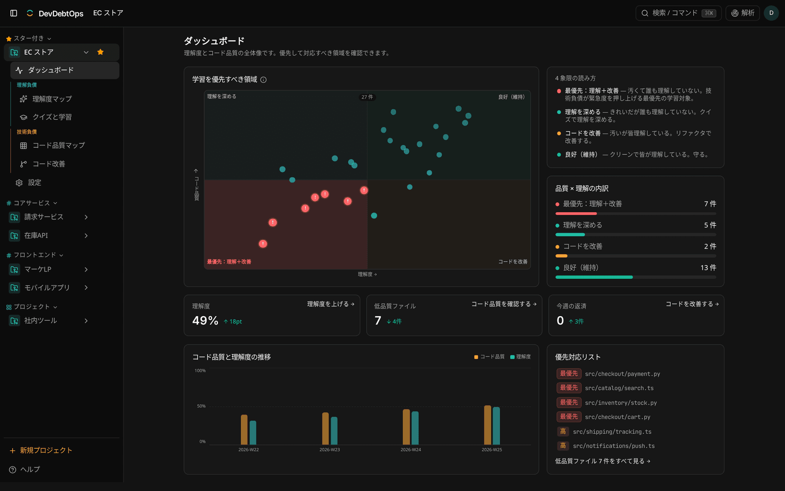
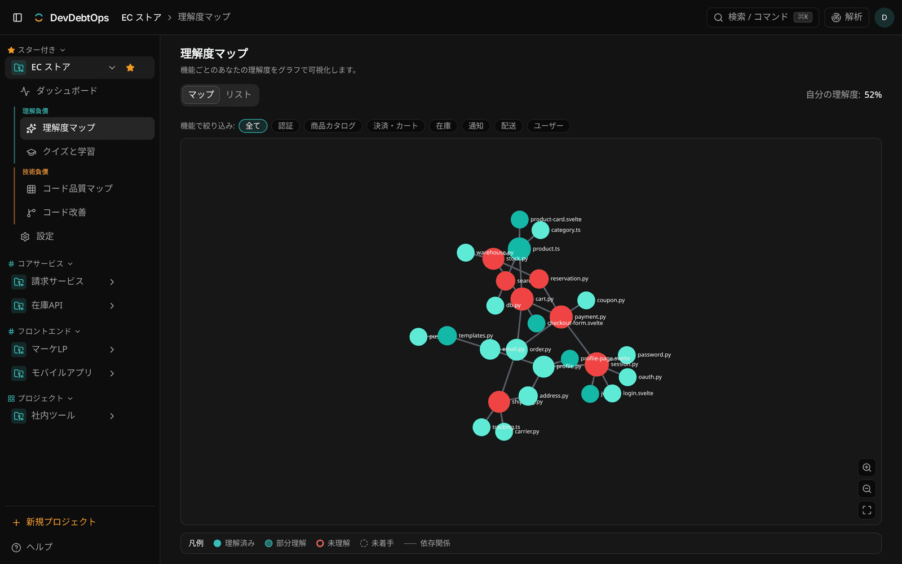
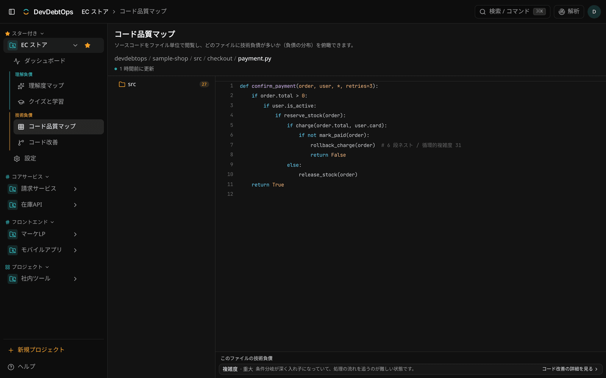
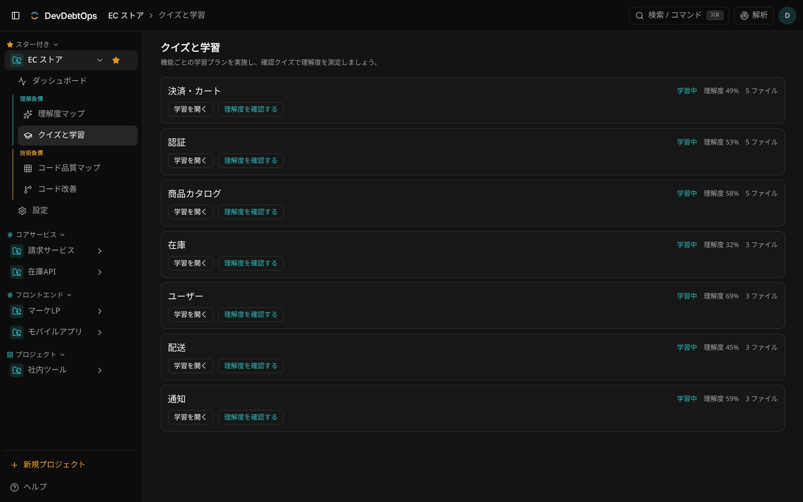
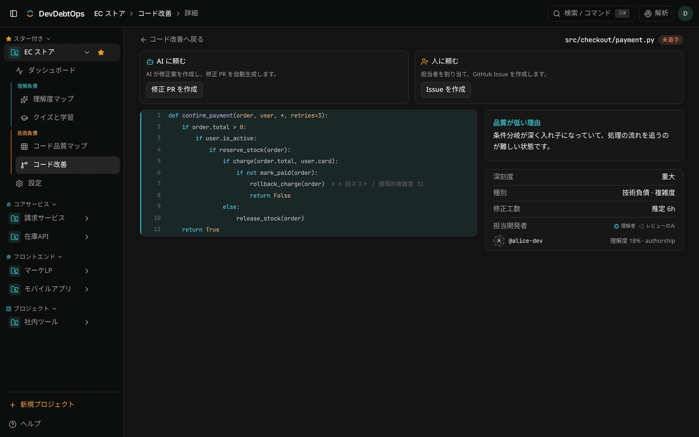

コードベースの理解度を実測する開発プラットフォーム
GitHub リポジトリを解析し、チームの理解度をクイズで実測。 技術負債は AI がリファクタ PRで返す。 属人化と技術負債を、ひとつのダッシュボードで管理します。
GitHub App 連携 ・ Google Cloud / Cloud Run ・ Vertex AI (Gemini) で稼働
動くが誰も中身を理解していないコードは、技術負債とは別の理解負債。 変更速度・レビュー品質・オンボーディングを静かに蝕みます。
担当者の異動・退職でコードが事実上ブラックボックスに。レビューも改修も止まる。
生成量が増えるほど、誰にも理解されないまま本番へ。レビューが追いつかない。
技術負債は山積みでも「どこから手をつけるか」が主観頼み。緊急度を測れない。
検知は出発点ではなく「どの理解ギャップが緊急か」を示すホットスポット信号。主役は理解度の実測と返済です。
検知・理解度・機能クラスタリングをまとめて実行。
git blame に頼らず、理解度を能動的に計測する。
チーム資産を優先した学習プランで理解度を引き上げる。
AI が改善案を生成し、GitHub に返済 PR を作成する。
FEATURES
解析からダッシュボード、可視化、返済までを 1 つのワークスペースで。
Dashboard
チーム理解度（KC）とコード品質を一枚で俯瞰。「学習を優先すべき領域」と推移を確認できます。閲覧専用に保ち、解析はトップバーから実行します。

Understanding Map
リポジトリをファイル単位のグラフで可視化。ノード＝ファイル、色＝理解度、線＝ファイル間の依存・呼び出し（import と関数コールを解析）。上部の機能フィルタで特定機能に関わるファイル群だけに絞り込め、マップ／リストの両ビューに効きます。

Code Quality Map
ソースコードをファイル単位で閲覧し、どのファイルに技術負債が多いかを俯瞰。重複・複雑度・dead code・AI 生成痕跡の検知結果を理解度と重ね、着手すべきホットスポットを見つけます。

Quizzes & Learning
「クイズ（実測）」で L1〜L5 の問題に答えて理解度を計測し、「学習（返済）」でプランを進めて引き上げます。git blame に頼らず能動的に計測するので、単独開発・コードを書かない PM でも計測できます。

Code Improvement
改善対象リストから対象を選ぶと、該当コードを行ハイライトで解説。「AI に頼む」で修正 PR を自動生成、「人に頼む」で担当者を割り当てた GitHub Issue を作成します。

INFRASTRUCTURE
Google Cloud 上のコンテナ構成。重い解析は非同期ワーカーへ分離し、Webhook 駆動で自動スケールします。
api（外部公開・SPA 同梱）と service（内部・重い解析の Cloud Tasks ターゲット）を分離。
PostgreSQL ＋ pgvector。Alembic でスキーマ管理。
検知・理解度・クラスタリング等の重処理をワーカーへ委譲。冪等・再配送前提の設計。
外部 HTTPS ロードバランサ＋マネージド証明書。レート制限はエッジで強制。
Secret Manager（平文環境変数は不可）／Artifact Registry でコンテナ管理。
全リソースをコード化。この LP も api と同一ドメインの /lp に同梱して配信。
SECURITY
アクセス JWT（5 分）とリフレッシュ（7 日・DB 管理）の Cookie を分離。ローテーション＋再利用検出、`token_epoch` による即時ログアウト無効化。
SameSite=Lax ＋ Origin 検証ミドルウェア、トークンに固有 audience を付与して用途を分離。
Workload Identity Federation で長期クレデンシャルを排除。秘密は Secret Manager に集約（平文環境変数なし）。
キューには秘密を載せず、ワーカーが実行時に Secret Manager から GitHub トークンを mint。キュー無効時はフェイルクローズ。
Cloud Armor によりアプリ手前で制限。アプリ内のレート制御に依存しません。
リポジトリ内容は「データ（指示ではない）」として境界を明示。生成物を検証（空・巨大な改変を拒否）し、PR は未レビュー明示。
エージェント（LLM）に情報を与える際は、Cloud DLP（Sensitive Data Protection）と detect-secrets で PII・シークレットをマスキングしてから送信します。
OWASP に準拠した脆弱性スキャンを実施済み。認証・入力・依存関係など主要なリスク観点を点検しています。
GitHub リポジトリを接続して解析するだけ。技術負債と理解負債の両輪を回し始めましょう。
リポジトリを接続して始める